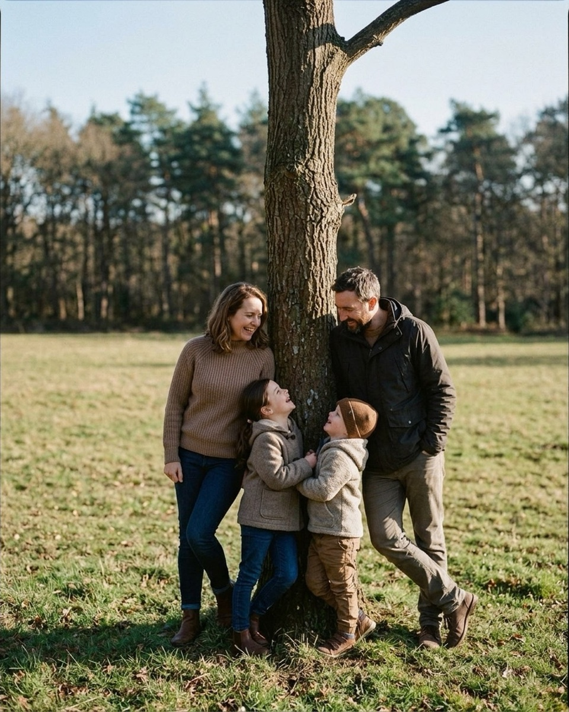
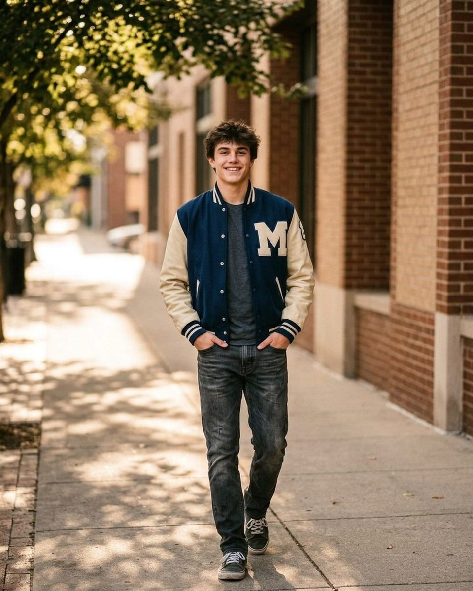
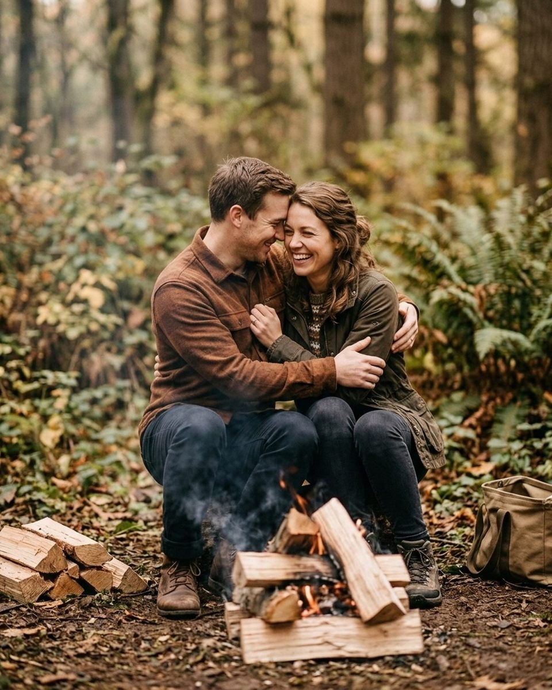
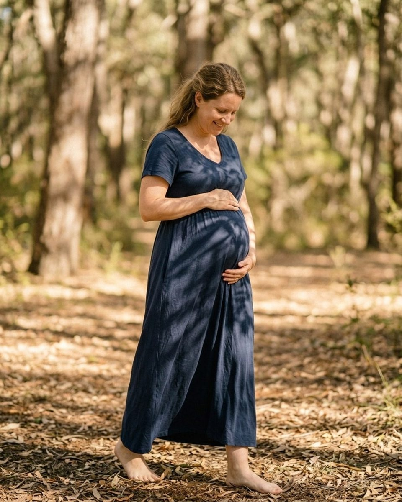
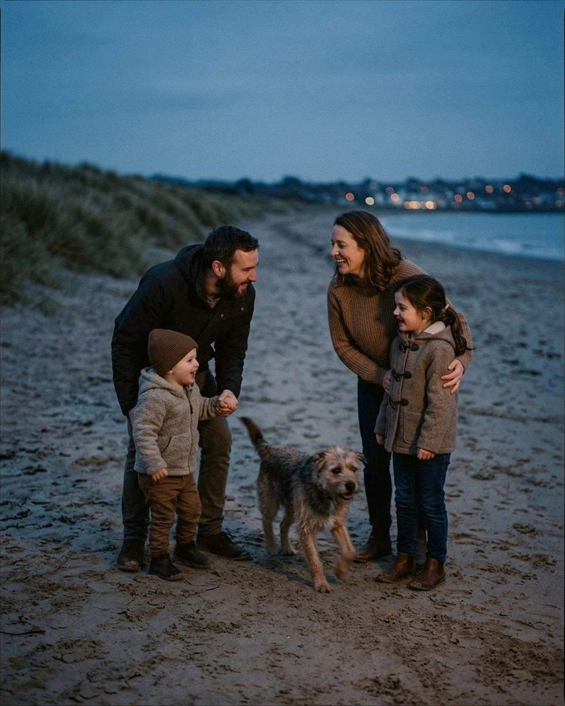

Overcast and flat light: poses and prompts for a grey day
Twenty-three prompts from the Prompted catalog for shooting under cloud, plus how to find direction in light that appears to have none.
Overcast is the light photographers apologise for and clients quietly prefer. Nobody squints, nobody has a shadow across half their face, and skin tones sit where you put them. What you lose is direction. A heavy sky is a softbox the size of the county, and light arriving from everywhere at once flattens cheekbones, kills the separation between a subject and the tree line behind them, and makes every frame look like it was taken at the same moment, because it was. The fix is not a reflector. It is knowing where the sky is brightest, using anything solid nearby to block the rest, and choosing poses that do not depend on the sun for their shape. Everything below is quoted word for word from the Prompted catalog, with the pose it belongs to and how to use it under a grey sky. The app filters poses by the light you are actually standing in, and overcast is one of the conditions it filters on, so you can pull this list up in the car while the client is still parking. The reference images are AI-generated posing references and are labelled as such; real galleries are being added through the contributor program as photographers submit their own work.

Overcast light still has a direction
The first thing to do on a grey day is find the bright patch. Even under full cloud there is a part of the sky the sun is behind, and it is usually obvious once you look for it rather than at the ground. Stand with your back to it and your subject is lit from the front, flat and even. Turn them a quarter toward it instead and you get the beginnings of a short side, which is all the modelling most faces need. That one decision does more for an overcast frame than any amount of post-processing.
The second thing is subtraction. Direction under cloud comes from what you take away, not what you add. Put a wall, a doorway, an overhang, a dense tree line or the side of a car on one side of your subject and it blocks the sky from that angle, which drops that side of the face into relative shadow. Photographers call it negative fill and it costs nothing. A porch is the best light modifier on an overcast day: your subject stands just inside the edge, the open side is lit by the whole sky, and the roof takes care of everything above and behind.
Because overcast light does not change, you also lose your usual excuse for hurrying, and that is worth using. Slow prompts work under cloud in a way they never do in the last five minutes of golden hour.
Just stand in the light for me. That's the whole job.
CalmFrom the pose “Hug from behind”
Say it once you have found the brightest patch of sky and placed them in it. It sounds like reassurance and is really an instruction: the job is standing still in that spot, because the spot is doing the work the sun would normally do.
We can start with your 'whatever' face. That one's usually the keeper.
Nervous clientFrom the pose “Hands in pockets”
Good as the first frame against a wall or under an overhang. Flat light shows an unwarmed-up face exactly as it is, with no shadow to soften it, so ask for the unguarded expression on purpose.
Kick a leaf at me. Gently. This lens was expensive.
PlayfulFrom the pose “Profile look away”
Use it when the frame has gone static, which is the usual failure of a cloudy day. The throw gives you motion the light will not supply, and 1/500 is easy under cloud if you open up a stop.

Seniors: the easiest portrait light there is
Single-subject sessions are where overcast stops being a compromise. There is no squint, no hot spot on a forehead, and you can walk a senior into any direction you like without re-checking the sun. Acne, texture and a nervous flush all read softer than they do in direct light, which matters more to an eighteen-year-old than anything about mood. Wardrobe gets easier too: dark clothing does not go to black and white shirts do not blow out, so a senior who brought four changes can use all four.
What you have to supply yourself is contrast in the pose. Put them against something darker than they are — a brick wall, a tree line, a shadowed doorway — so the subject separates. Then keep the frame tighter than you would at golden hour. A wide landscape frame on an overcast day includes a lot of white sky, and white sky in the top third of an image is the single fastest way to make a photograph look like a snapshot.
You can blink. Blinking is allowed and encouraged.
Nervous clientFrom the pose “Walk toward camera”
Say it as they start walking toward you across an open field. Under cloud there is no bright sun to blink against, so the usual reason for a tense face is gone and naming it removes the other one.
Rest your chin on your hand and let your gaze go soft.
CalmFrom the pose “Curb sit field”
Use it once they are seated low and the whole sky is on them. A hand under the chin adds the only shadow in the frame, right under the jaw, which is where a flat-light portrait needs one.
Tuck your hair behind your ear, slow, like you're thinking.
CalmFrom the pose “Hands in pockets field”
Good for a quiet frame in the middle of the session. The slow hand movement gives the eyes somewhere to go and lifts one arm, which builds a shape the light will not build for you.
Look down at your shoes, then up at me on three. No smile needed.
Nervous clientFrom the pose “Hands on hips beach”
A reliable reset on a grey beach, where a subject can look stranded. The down-then-up gives a clean eyeline and a natural chin position, and the exposure is identical on both halves of the count.
Look over your shoulder like I owe you money.
PlayfulFrom the pose “Path stroll forest”
Save it for a forest path, where the canopy is already acting as negative fill. The over-the-shoulder turn puts one side of the face toward open sky and the other into the trees, which is the most direction you will get all day.
Couples, with no sun to hide behind
A couple shoot at golden hour has a built-in crutch: put the sun behind them, underexpose, and a stiff pose still reads as warm. Overcast takes the crutch away. Nothing in the frame is romantic on its own, so whatever the two people are actually doing is what you get. Proximity has to do the work. Move them closer than feels necessary, then closer again, and let small gestures carry the frame, because there is no flare or colour to carry it for them.
Forest and urban backgrounds help here. Both are darker than the sky, both block light from one side, and both give the eye something to hold when the sky is a blank. Avoid open fields with high horizons unless you shoot low and keep the sky out.
Nobody's judging your hands. Wherever they land is right.
Nervous clientFrom the pose “Hug from behind”
Use it for the first close pose, before either has decided where a hand belongs. Flat light shows tension in a grip clearly, so say it early rather than correcting later.
Whatever you did just then — that was perfect. Do it again.
Nervous clientFrom the pose “Slow dance”
Say it the moment something real happens, and say it fast. Because the light does not change under cloud, a repeat of a good moment looks identical to the first one, which is a luxury you do not have at sunset.
Hold each other and sway, barely. Less than that. Perfect.
CalmFrom the pose “Campfire cuddle”
Best in a forest clearing with open sky on one side. Barely moving keeps the frame sharp at the slower shutter speeds overcast pushes you toward, while avoiding the dead stillness flat light exaggerates.
Say their name, just their name, quietly.
RomanticFrom the pose “Forehead lean”
Use it against a wall in open shade when you need a genuine expression rather than a posed one. The reaction is small and happens on the face, which is fine here: even light lets you shoot tight without losing anything to shadow.
Press your foreheads together and close your eyes for three seconds.
RomanticFrom the pose “Nose to nose”
Good for the closest frame of the session. Closed eyes solve the main problem with flat light on a nervous face, which is that the eyes have no catchlight to anchor them.

Families and groups, when the sky is one big softbox
Groups are the one case where overcast is unambiguously better than sun. Nobody is squinting, nobody is half in shadow, and you can arrange six people without checking whether the one on the end has a branch shadow across their face. Exposure is identical across the group, so you can composite a head from a second frame without anyone being able to tell, which is useful on a family of five where somebody always blinks.
The catch is energy. Flat light makes a flat photograph if the people in it are standing still, and children pick up on a grey afternoon faster than adults do. Lean toward movement and physical contact, keep the sky out of the top of the frame, and put the group against trees, a building or a rise in the ground so they are not floating against white.
Cuddle up like it's the end of movie night.
CalmFrom the pose “Dog in the middle”
Use it once the group is seated and close. Under cloud you can shoot a pile of five people at f/4 and hold every face, so let them collapse into each other instead of arranging a tidy line.
Sit close and watch the sky change. That's the whole plan.
CalmFrom the pose “Tree line lean”
Good for a wide frame with a tree line behind. It is also literally true under cloud: the sky is the only thing moving, and giving them something to watch buys thirty seconds of unposed attention.
One quiet minute, all together. I'll take care of the rest.
CalmFrom the pose “Tailgate sit beach”
Save it for the end of a grey session, when everyone is a little cold and ready to stop. The light will be the same in ten minutes as it is now, so a slow closing frame costs you nothing.
Maternity, where flat light earns its keep
Maternity benefits most from cloud. The light wraps a bump evenly instead of carving a hard line across it, a tired face reads gently, and a flowing dress photographs better in soft light than in direct sun, where the fabric goes to paper white on one side. You also get to slow down, which is not a small thing for a client who is eight months along.
Keep the direction trick in play: turn her a quarter toward the brightest sky and let the far side of the bump fall away, because that gradient gives the shape dimension. Shoot from slightly above her eyeline for face frames and from waist height for full-length.
The dress does most of the work. You just breathe.
Nervous clientFrom the pose “Look down at bump field”
Say it as the first direction, before any posing. Under cloud there is no light to chase, so you can genuinely stand still while she settles, which makes the sentence true rather than reassuring.
Rest both hands on the bump and just listen.
CalmFrom the pose “Garden barefoot”
Use it at a garden or forest edge with open sky to one side. Both hands on the bump create the frame's one shadow line, and listening gives her a reason to look down rather than at you.
Let the dress settle. Then one more quiet breath.
CalmFrom the pose “Backlit profile golden”
Good for the frame you want to be the print. Overcast gives fabric its best behaviour, so waiting a beat for the dress to stop moving is worth the pause it costs.
Tell the baby the family gossip. They can keep a secret.
PlayfulFrom the pose “Window silhouette”
A reset when the session has gone too solemn, which grey weather encourages. It produces a real smile aimed downward, which is the direction the light is already flattering.
Kneel down and kiss the bump like you're telling them a secret.
RomanticFrom the pose “Partner bench lean urban”
For a two-person frame against a wall or bench in town. The kneel puts his face on the shadow side and hers toward open sky, which is as much separation as an overcast day gives you between two people.

When the grey goes to blue
An overcast day has no golden hour, so the last useful light is blue hour, and it arrives earlier and lasts longer than on a clear evening. There is no colour on the horizon to wait for, which makes the transition gentle: the light gets dimmer and slightly cooler and stays soft the whole way down. Work your quietest poses here, raise your ISO before you think you need to, and let the white balance sit cool, because blue reads as evening and neutral reads as a mistake.
Stay quiet together. Quiet looks incredible on you two.
CalmFrom the pose “Look back over shoulder”
Use it in the last light in a forest, where cover makes it dark earlier. Stillness lets you shoot at 1/100 without worrying, and the quiet is less a pose than the only thing the light is still fast enough for.
Walk slow, hold hands, let the kids set the pace.
CalmFrom the pose “Ring around parents”
For the closing family frame as the grey turns blue. A slow walk is the only group movement you can still freeze, and letting the kids set the pace means nobody is hurried while you are quietly running out of light.

Two things to fix in the frame, not in the edit
The first is the sky. A white sky has no detail to recover and pulls the eye out of the top of the frame every time. Shoot from lower so the horizon sits high, use a tree line or a building as your backdrop, or crop it out in camera. If you must include it, expose for the face and let the sky go rather than dragging it back grey in the edit.
The second is white balance. Overcast light is cooler than most people expect, around 6500K, and a camera left on auto will often split the difference and give you skin that reads slightly green. Set it manually, check a face at full magnification before you have shot fifty frames, and keep it consistent so the gallery does not shift from frame to frame. Neither is a creative decision. Both are the difference between images that look like a choice and images that look like weather.
The rest is the problem you have in any light: getting people to behave like themselves while a stranger points a lens at them. Cloud makes that easier, not harder, because nothing is urgent. The prompts above are simply the ones from the catalog that need no sun to land, and you can filter to the same set in the app by choosing overcast before the session starts.
The Fall Mini Session Shot List
About 25 poses grouped by family size, each with the words to say. A free PDF, sent once you confirm your address.
One email to confirm, one with the PDF. Unsubscribe any time. No selling, no sharing.
Every prompt in this guide is in the app, with the pose it belongs to.
Prompted is the posing app that is only a posing app: 250+ poses, each with word-for-word prompts in four tones, filtered to the light you're standing in. The sun tracker is free forever.
Get Prompted on the App Store